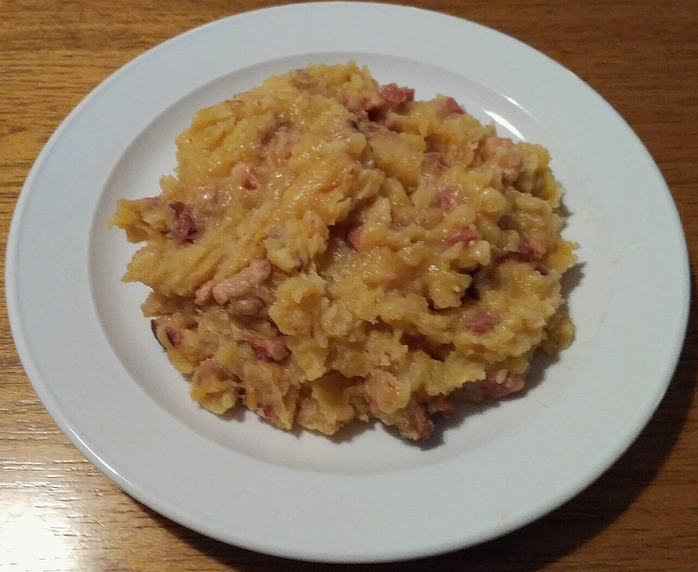
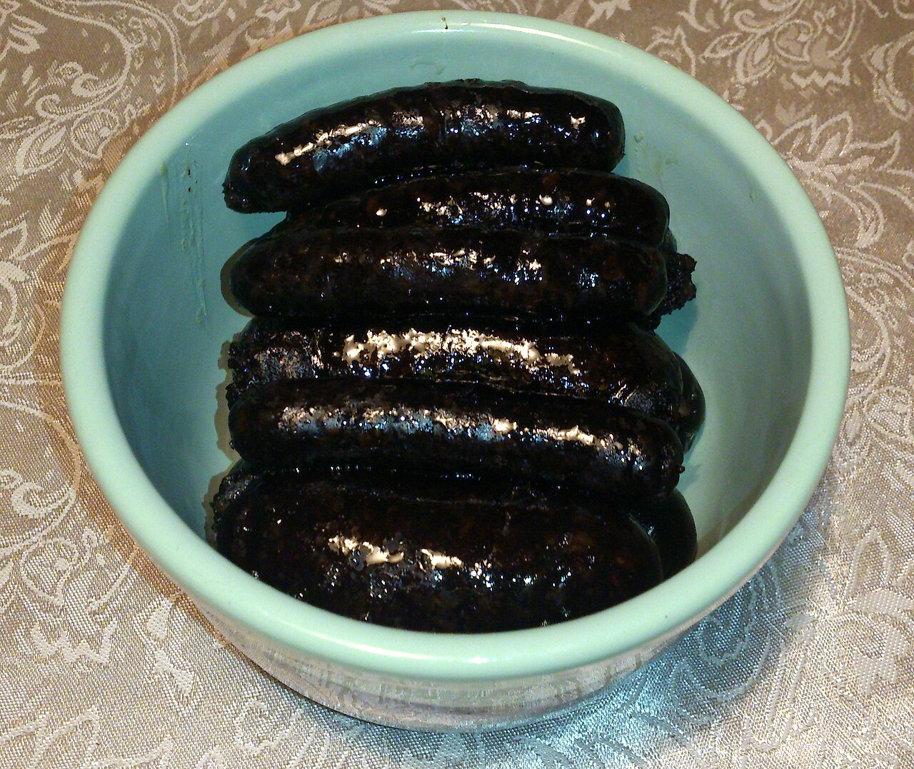
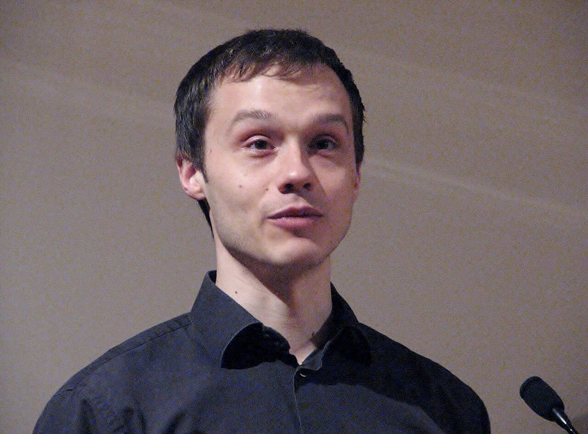
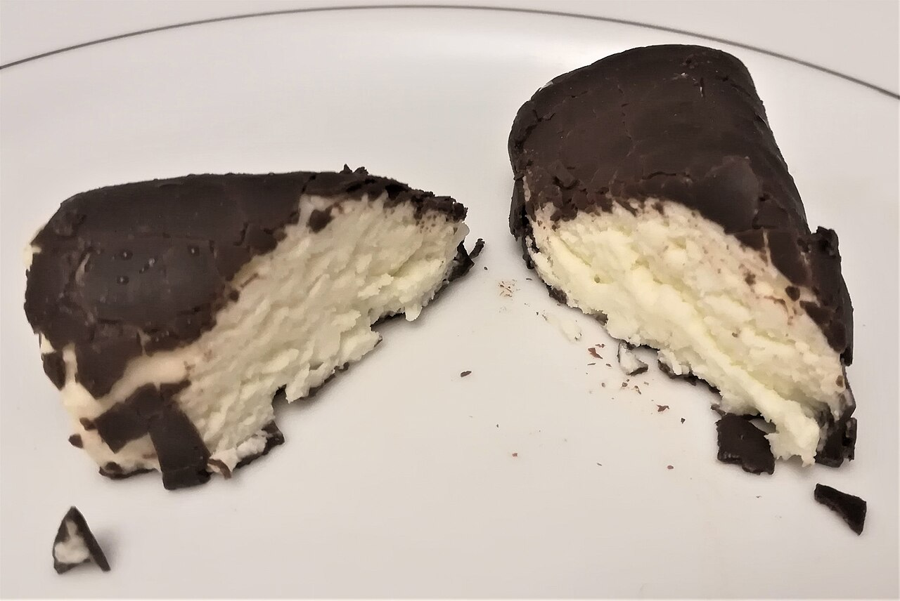
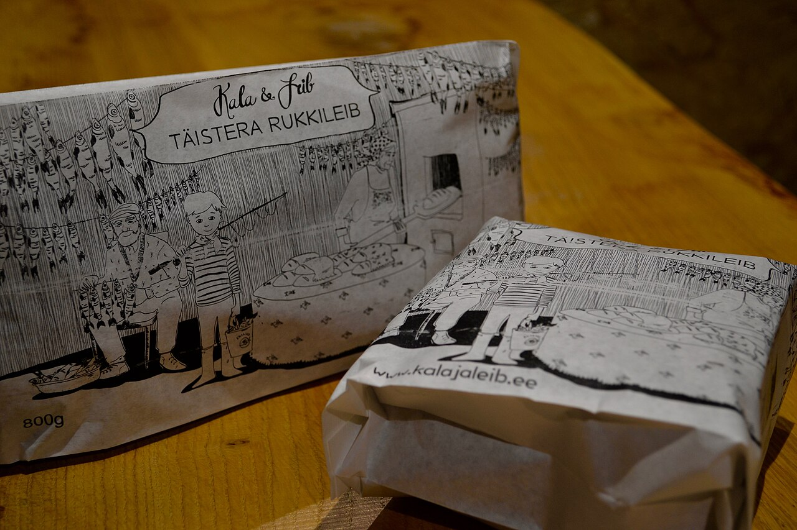
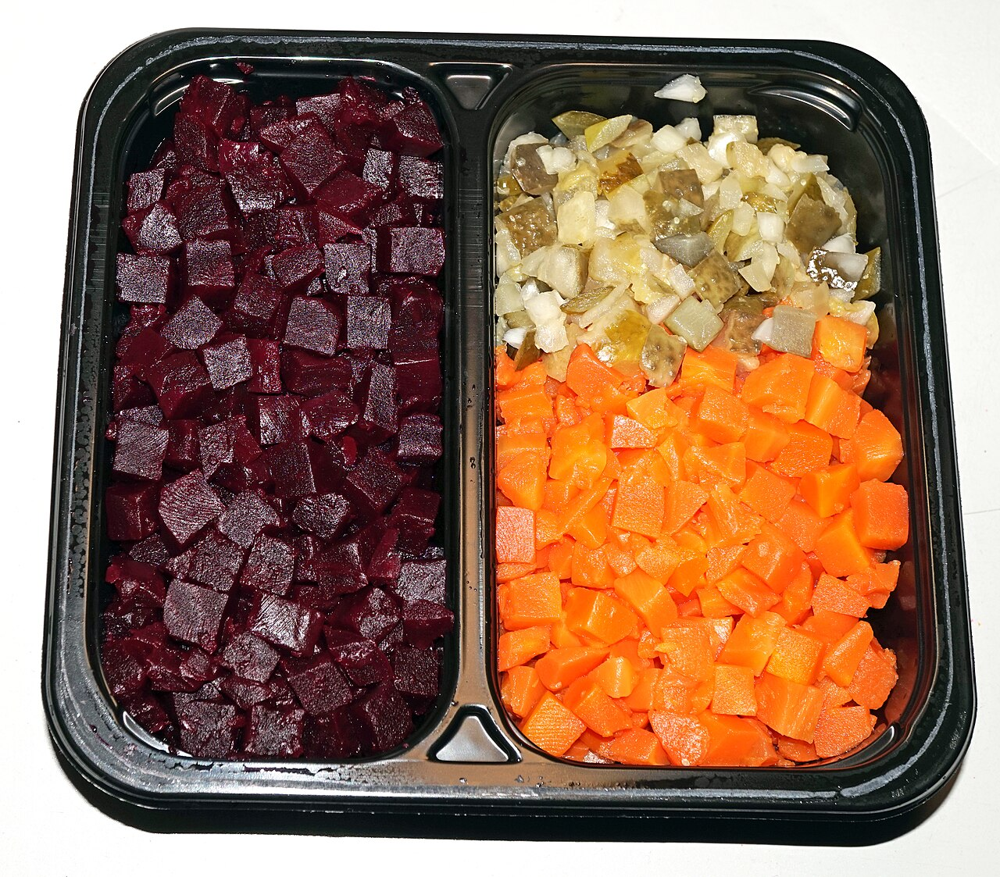
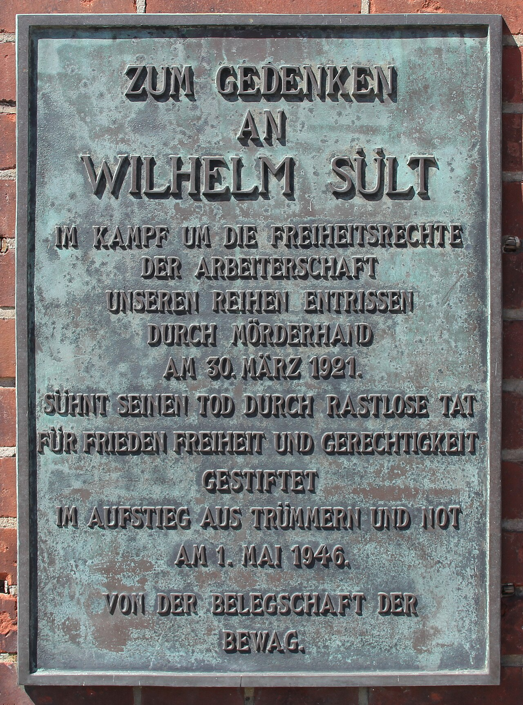
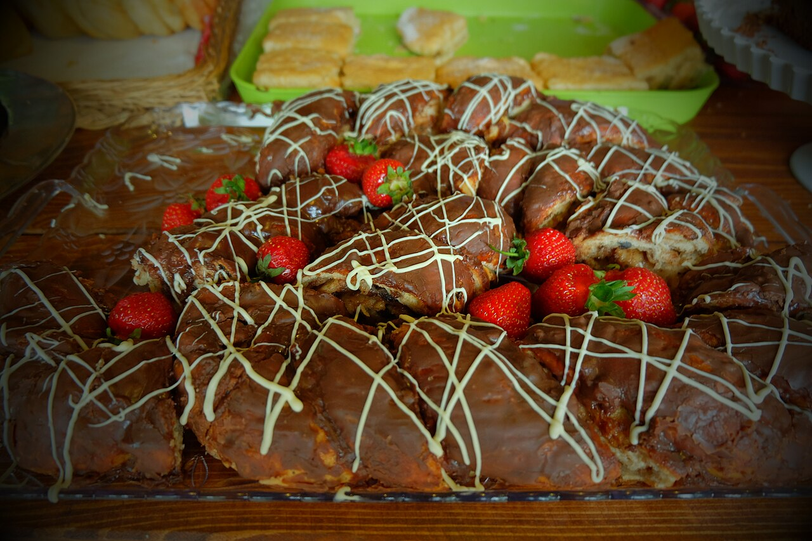
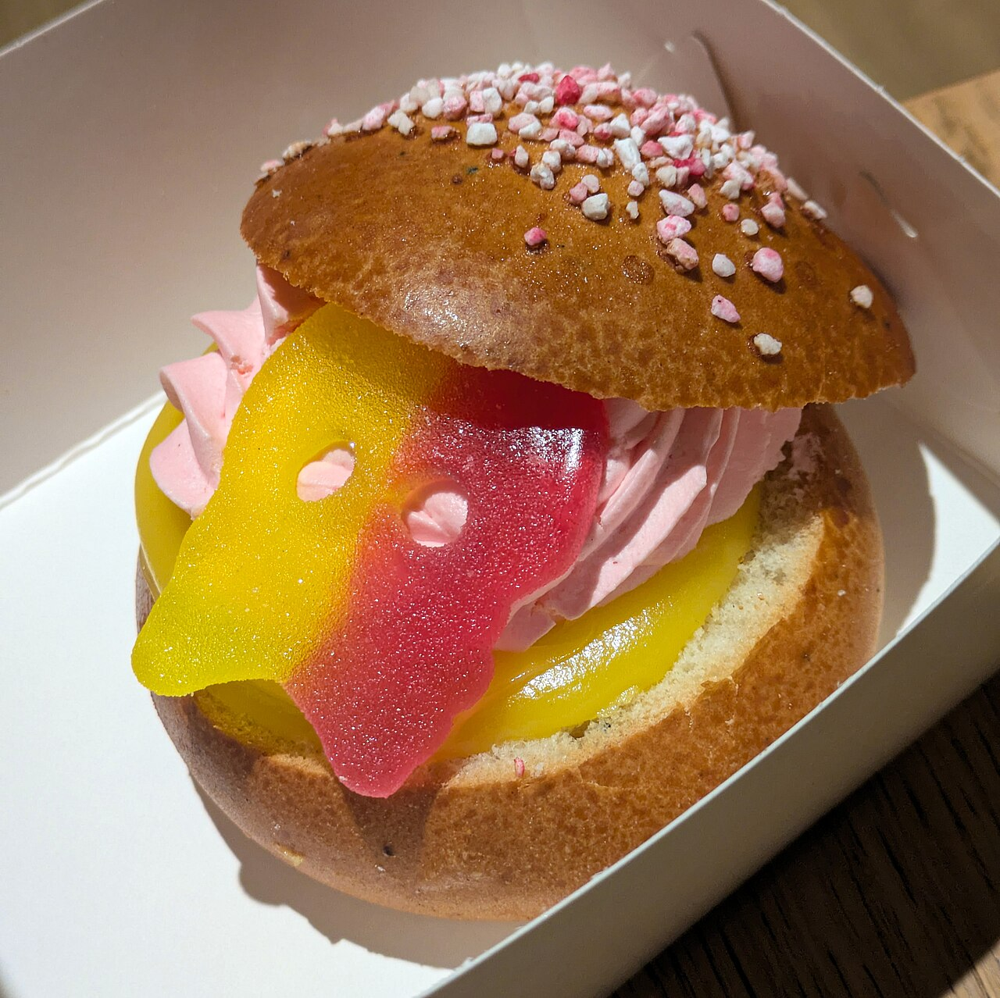
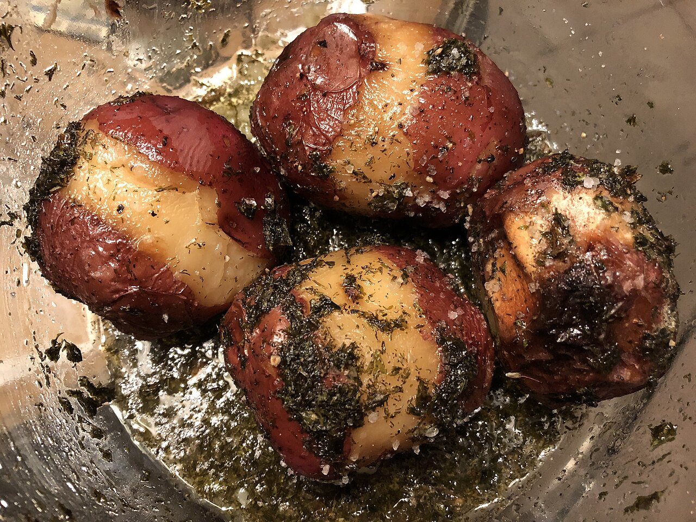

대표 음식 15종
사진은 Wikimedia Commons에 공개된 실제 촬영본이며, 저작자와 라이선스를 각 사진 아래에 적었습니다. 촬영한 식당·지역·조리법에 따라 실제 모습은 다를 수 있습니다. 맞는 사진을 아직 찾지 못한 4곳은 비워 두었습니다.
-

사진: Ave Maria Mõistlik · CC BY-SA 3.0 · Wikimedia Commons 킬루버일레이브Kiluvõileib
검은 호밀빵 위에 작은 청어류 생선 킬루·삶은 달걀·허브를 올린 오픈샌드위치.
-

사진: M0d3M · CC BY-SA 4.0 · Wikimedia Commons 물기푸데르Mulgipuder
감자와 보리 가루·보리쌀을 함께 익혀 돼지고기 등을 올리는 포리지.
-

사진: Pikk de Päkk · CC BY-SA 3.0 · Wikimedia Commons 베리보르스트Verivorst
크리스마스에 먹는 피순대식 소시지로 보리·피·향신료를 속재료로 쓴다.
-

사진: Ave Maria Mõistlik · CC BY-SA 3.0 · Wikimedia Commons -

사진: MOs810 · CC BY-SA 4.0 · Wikimedia Commons -

사진: Kala&Leib · CC BY-SA 4.0 · Wikimedia Commons -

사진: Tiia Monto · CC BY-SA 4.0 · Wikimedia Commons 로솔리에Rosolje
비트·감자·절임청어·피클·사워크림 등을 섞은 분홍빛 샐러드.
-

사진: OTFW, Berlin · CC BY-SA 3.0 · Wikimedia Commons -
사진 준비 중
맞는 사진을 구하는 대로 채웁니다. 다른 사진으로 대신하지 않습니다. -

사진: KristinaKuningas · CC BY-SA 4.0 · Wikimedia Commons -
사진 준비 중
맞는 사진을 구하는 대로 채웁니다. 다른 사진으로 대신하지 않습니다. -

사진: Apinanaivot · CC0 · Wikimedia Commons -

사진: Capvideo · CC BY 4.0 · Wikimedia Commons 아흐유카르툴Ahjukartul
오븐에 구운 감자와 고기·사워크림 소스를 곁들이는 가정식.
-
사진 준비 중
맞는 사진을 구하는 대로 채웁니다. 다른 사진으로 대신하지 않습니다. 수이추칼라Suitsukala
발트해와 호수에서 잡은 생선을 훈연한 요리.
-
사진 준비 중
맞는 사진을 구하는 대로 채웁니다. 다른 사진으로 대신하지 않습니다. 페이프시 양파 파이Peipsi Onion Pie
양파 재배로 유명한 지역의 소박한 파이·전채.
함께 알아두면 좋은 점
- 알레르기·식단: 성분과 조리법은 식당·가정마다 달라 일반화할 수 없습니다. 알레르기나 식단 제한이 있다면 주문 전에 직접 확인하세요.